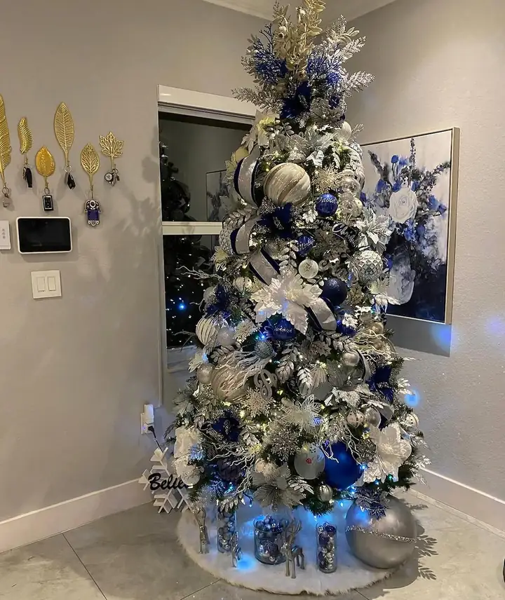

Miami / all year
Rose describes this part of the work as transforming lobbies, homes, offices, hotels and businesses with natural plant decor. It is the same skill as a tree, spread across a whole room and left up for twelve months instead of five weeks.

A row of identical planters bought from a catalog reads as furniture. Greenery that works is composed: varied heights, a repeated container language, and placement that follows how people actually move through the space rather than where the outlets happen to be.
In a lobby that usually means anchoring the sightline from the door, softening a hard reception edge, and filling the corners that otherwise echo.
Miami light and Miami air conditioning are hard on plants, and some positions in a building will kill anything living no matter how well it is chosen. Those spots get high quality faux, and the positions with real light get real plants.
Being honest about which is which up front is the difference between a lobby that looks good for years and one that looks tired by March.
Most commercial clients start with a Christmas display and add the year round greenery afterwards, once they have seen the standard of the install. One walkthrough can cover both, and the quote comes back separated so you can approve them independently.
Homes work the same way. Plenty of the greenery work happens in living rooms and entryways, not lobbies.



Pick the plants and greenery option on the quote form and describe the space. Commercial spaces get a walkthrough before any number is put in writing.